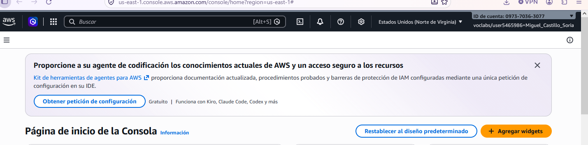
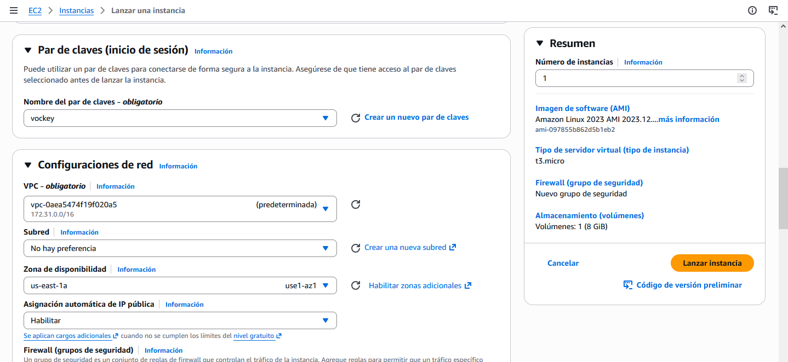
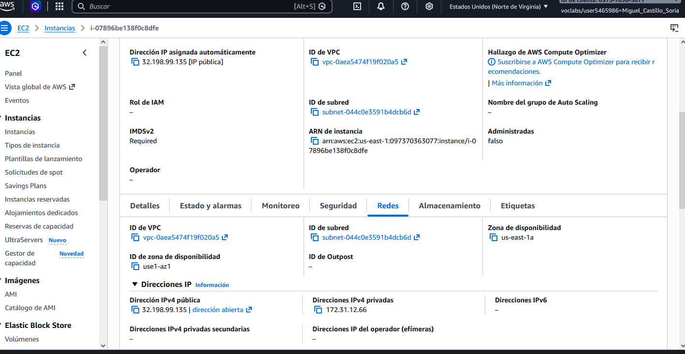
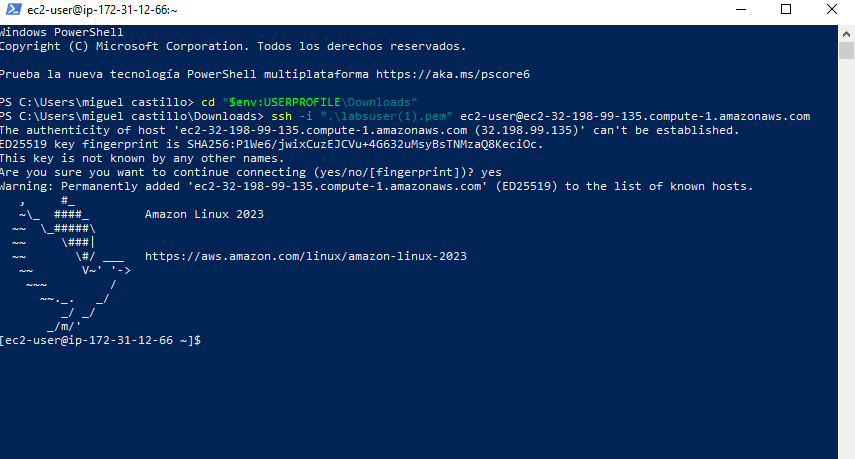
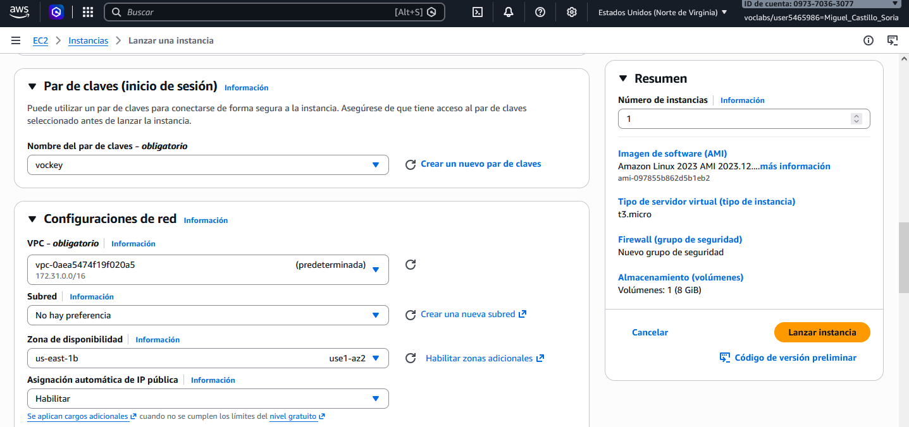
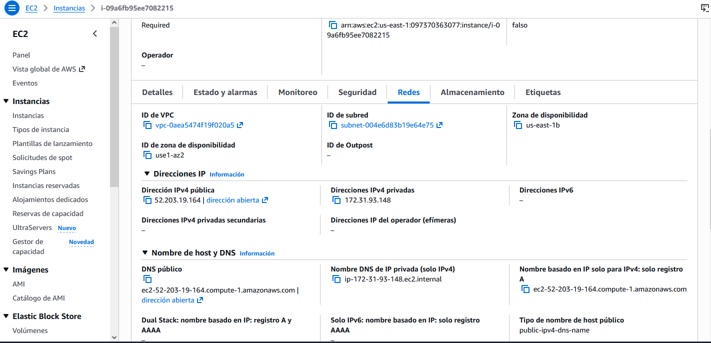
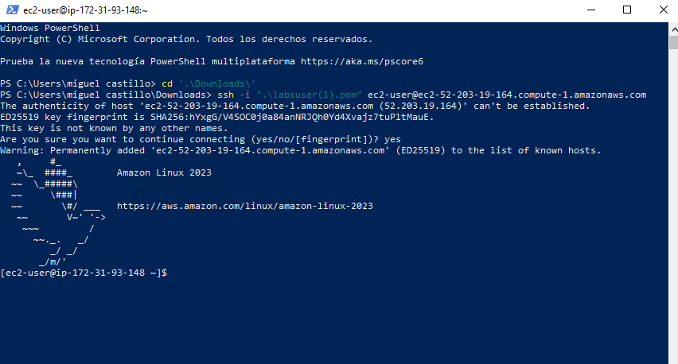
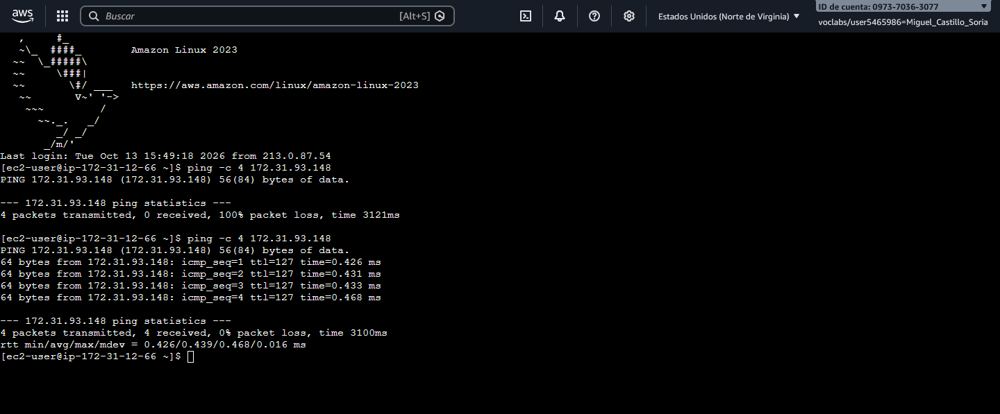
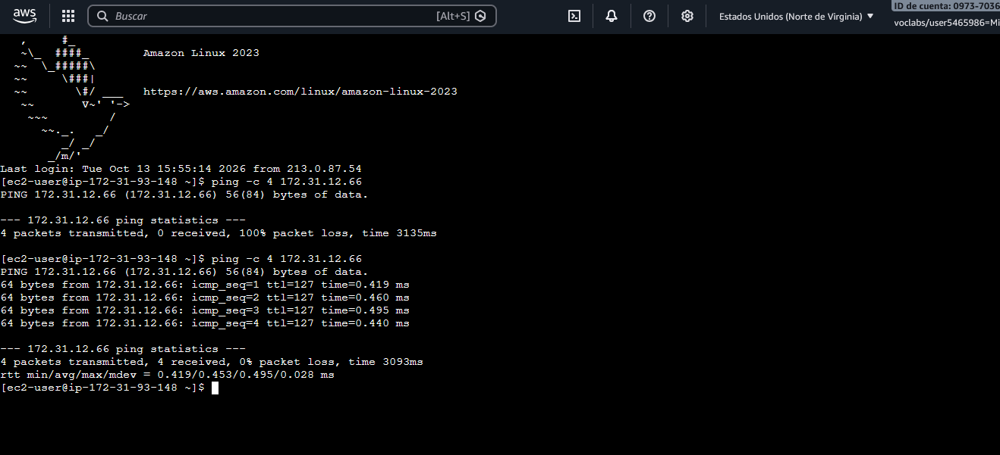
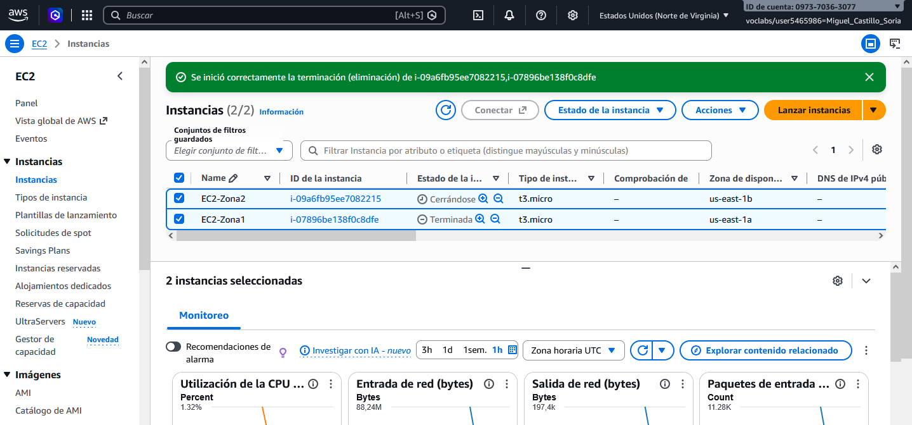

Objetivos del laboratorio
Trabajar dentro de Norte de Virginia
us-east-1.
Desplegar las máquinas en dos AZ diferentes dentro de la misma región.
Crear dos instancias Amazon Linux de tipo t3.micro.
Comprobar el acceso remoto a las dos instancias.
Utilizar las direcciones IPv4 privadas para comunicar las dos EC2.
Permitir ICMP para comprobar la conectividad mediante ping.
Región ≠ Zona de disponibilidad
🎓 EXAM MODE
Este es el concepto fundamental de toda la actividad:
Una región es una ubicación geográfica de AWS. Dentro de una región existen varias zonas de disponibilidad (Availability Zones).
Por tanto:
Arquitectura realizada
172.31.12.66
172.31.93.148
EC2-Zona1 · us-east-1a

Selección de la región
us-east-1
antes de comenzar el despliegue.
| Parámetro | Configuración |
|---|---|
| Nombre | EC2-Zona1 |
| AMI | Amazon Linux |
| Tipo | t3.micro |
| Par de claves | vockey |
| Zona de disponibilidad | us-east-1a |
| SSH | TCP/22 |
| Almacenamiento | 8 GiB gp3 |

Configuración de la primera instancia y selección explícita de la primera zona de disponibilidad.

La instancia queda desplegada en us-east-1a con la dirección privada 172.31.12.66.
Conexión SSH a EC2-Zona1
Una vez iniciada la máquina se comprobó el acceso remoto
mediante SSH utilizando el usuario de Amazon Linux
ec2-user.

Acceso correcto al sistema Amazon Linux de la primera zona.
🎓 Detalle interesante
El prompt de Amazon Linux identifica internamente la máquina mediante su IP privada:
Esto coincide con la dirección privada observada en la consola AWS:
172.31.12.66EC2-Zona2 · us-east-1b
La segunda máquina se configuró con características similares, pero seleccionando expresamente una zona de disponibilidad diferente.
| Parámetro | Configuración |
|---|---|
| Nombre | EC2-Zona2 |
| AMI | Amazon Linux |
| Tipo | t3.micro |
| Par de claves | vockey |
| Zona de disponibilidad | us-east-1b |
| Almacenamiento | 8 GiB gp3 |

La segunda máquina se despliega en us-east-1b, distinta de la primera instancia.

AWS confirma la segunda zona y la dirección privada 172.31.93.148.
Dos máquinas · Dos zonas
EC2-Zona1
Zona: us-east-1aZone ID: use1-az1
Privada: 172.31.12.66
Pública: 32.198.99.135
EC2-Zona2
Zona: us-east-1bZone ID: use1-az2
Privada: 172.31.93.148
Pública: 52.203.19.164
Las dos instancias pertenecen a Norte de Virginia, pero se encuentran físicamente distribuidas entre dos zonas de disponibilidad diferentes.
Conexión SSH a EC2-Zona2

La segunda instancia también queda accesible correctamente mediante SSH.
Comunicación mediante IP privada
Para comprobar la comunicación entre las dos instancias se utilizaron las consolas web integradas de EC2 y las direcciones IPv4 privadas.
172.31.12.66
172.31.93.148
🎓 EXAM MODE — IP pública vs privada
En esta práctica el objetivo no era hacer ping desde nuestro ordenador hacia AWS, sino comunicar EC2-Zona1 directamente con EC2-Zona2 mediante sus direcciones privadas.
Primer intento: ICMP bloqueado
Desde la consola web de EC2-Zona1 se ejecutó:
El primer intento no obtuvo respuesta:
Estar dentro de la misma VPC no significa que cualquier tipo de tráfico esté permitido automáticamente. El grupo de seguridad de la máquina de destino no tenía una regla de entrada que permitiera ICMP.
Permitir ICMP dentro de la VPC
Se añadió una regla ICMP utilizando como origen la red privada de la VPC:
| Tipo | Protocolo | Origen |
|---|---|---|
| Todos los ICMP - IPv4 | ICMP | 172.31.0.0/16 |
Las dos máquinas pertenecen a la VPC cuyo rango privado observado durante la práctica es:
EC2-Zona1 → EC2-Zona2

La misma consola muestra primero el 100 % de pérdida y, tras modificar el Security Group, la comunicación correcta.
EC2-Zona1, situada en us-east-1a, puede comunicarse mediante IP privada con EC2-Zona2, situada en us-east-1b.
Latencia media observada: 0,439 ms.
EC2-Zona2 → EC2-Zona1
Posteriormente se realizó la prueba en sentido contrario desde la consola web de la segunda instancia:
Para permitir la comunicación también se añadió la regla ICMP correspondiente al Security Group asociado a EC2-Zona1.

EC2-Zona2 se comunica correctamente con la dirección privada de EC2-Zona1.
Actividad 3 vs Actividad 4
Las dos actividades permiten observar dos tipos de pruebas de red diferentes.
| Actividad 3 | Actividad 4 | |
|---|---|---|
| Escenario | Virginia ↔ Oregón | Virginia AZ-A ↔ AZ-B |
| Regiones | Distintas | La misma |
| Direcciones utilizadas | IPv4 públicas | IPv4 privadas |
| Origen del ping | PC local | EC2 |
| Red | Internet | VPC |
| Latencia observada | 112 / 199 ms | Submilisegundo en la prueba A → B |
🎓 Concepto
No debemos comparar directamente los valores de latencia de ambas actividades como si fueran el mismo experimento.
En la Actividad 3 el tráfico partía desde nuestro equipo hacia direcciones públicas de AWS.
En esta actividad el tráfico circula entre dos instancias mediante sus direcciones privadas.
Eliminación de las instancias
Una vez finalizadas todas las pruebas se terminaron las dos instancias utilizadas.
Detener una instancia no es lo mismo que terminarla.
En esta práctica se realizó la terminación definitiva de ambas EC2.

EC2-Zona1 y EC2-Zona2 aparecen terminadas al finalizar el laboratorio.
Resumen de la práctica
Norte de Virginia
us-east-1.
Amazon Linux desplegado en
us-east-1a.
Acceso remoto correcto a la primera máquina.
Segunda instancia desplegada en
us-east-1b.
Acceso remoto correcto a la segunda máquina.
El primer intento falla porque ICMP no está permitido.
Se permite ICMP desde
172.31.0.0/16.
Ping privado correcto en ambos sentidos.
Terminación de las dos instancias.
Lo que hay que recordar
🎓 Zonas de disponibilidad — puntos clave
1. Una región AWS es una ubicación geográfica.
2. Una región contiene varias zonas de disponibilidad.
3.
us-east-1 es una región.
4.
us-east-1a y
us-east-1b son zonas de disponibilidad.
5. Dos EC2 pueden estar en AZ distintas y seguir perteneciendo a la misma región.
6. En esta práctica las dos máquinas se encuentran en la misma VPC.
7. Las IP privadas se utilizan para la comunicación interna entre recursos de la red.
8. Estar dentro de la misma VPC no implica que todo el tráfico esté permitido: también intervienen los Security Groups.
9.
ping utiliza
ICMP.
10. Permitir SSH no significa permitir ICMP.
11.
172.31.0.0/16 representa el rango utilizado
por la VPC observada durante esta práctica.
12.
0.0.0.0/0 representa cualquier dirección IPv4.
Actividad completada
Se han desplegado dos instancias Amazon EC2 dentro de Norte de Virginia utilizando dos zonas de disponibilidad diferentes.
EC2-Zona1
us-east-1a · 172.31.12.66
EC2-Zona2
us-east-1b · 172.31.93.148
Se ha comprobado el acceso SSH, identificado el bloqueo inicial de ICMP, configurado los Security Groups y verificado finalmente la comunicación privada bidireccional entre ambas instancias.
Recursos eliminados correctamente ✓